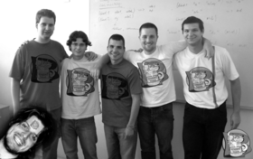
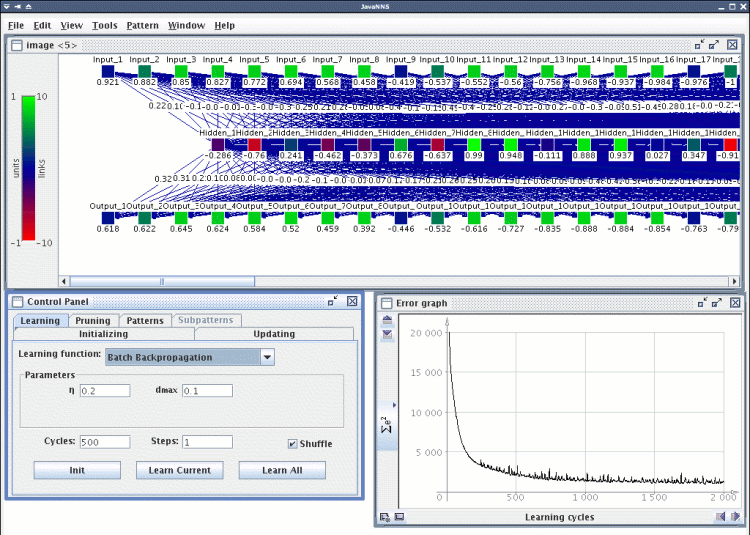
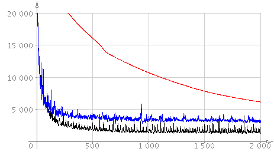
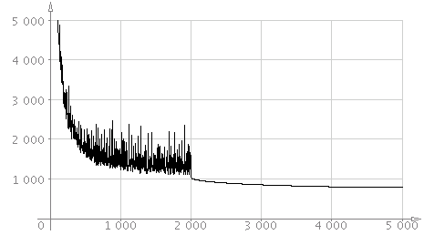
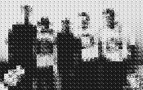
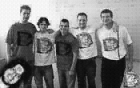

I have examined capabilities of SNNS package (Stuttgart Neural Network Simulator) and it`s interface in Python language by creating short script that was able to simulate compression of a picture with the Backpropagation method. The three layered net (64-16-64 units) learned blocks of 8x8 pixels and the image was reconstructed back and written to disk. I have investigated the image quality then.
Program SNNS disponuje kromě vlastního jádra na práci s neuronovými sítěmi (které je napsáno v jazyce C) a uživatelského rozhraní (pro X Window System) také jednoduchým rozhraním v jazyce Python. Jazyk Python je objektově orientovaný jazyk, který je pro rychlost vývoje, kterou nabízí velmi přehledná syntaxe, mezi programátory vysoce oblíben. Díky plné podpoře OOP je vhodný zejména na prototypování budoucích aplikací, ale jazyk sám (tedy jeho "interpret") na tom není výkonově špatně - to díky snadnému vytváření modulů v jazyce C.
Zaujala mě jedna přímá aplikace neuronových sítí pro kompresi obrazu. Je velmi snadná na pochopení i na implementaci, ovšem nedosahuje ani zdaleka takových úspor a kvality, jako známější metody (JPEG a podobně). Jako testovací obrázek jsem zvolil fotku vývojového týmu Beerfox - jak jsme žertovně nazvali složení několika studentů katedry informatiky při jednom ročníkovém projektu. Fotografie byla převedena do stupňů šedé, každý pixel byl tedy reprezentován číslem v intervalu <0, 255>

Komprese obrazu pomocí neuronové sítě je jednoduchá. Stačí vytvořit síť o n vstupních, n výstupních neuronech a m neuronech ve skryté vrstvě. Typicky se volí konfigurace 64-16-64. Obrázek se rozdělí do čvercových bloků o velikosti 8 pixelů (výška i šířka tedy musí být celočíselně dělitelná 8) a získáme tak p bloků. Těchto p bloků (vzorků) o 64 (8 * 8) pixelech (číslech) pak předkládáme síti a zvolenou metodou Backpropagation se ji snažíme naučit "na identitu". To znamená, že na do výstupní i vstupní vrstvy kopírujeme stejný vzorek.
Popsaná síť má jednoduchou topologii, jako aktivační funkci jsem volil hyperbolometrický tangens. Proto bylo třeba všechna čísla převést z intervalu <0, 255> do intervalu reálných čísel <-1, 1>, což jsem provedl jednoduchou lineární funkcí. K dané funkci (přímce) bylo snadné najít funkci inverzní, tedy funci pro zpětný převod zpět na hodnotu stupně šedi. To jsem využil při finálním odečtení výsledku z výstupní vrstvy a převedení zpět na obrazové body.
Jakmile chyba dosáhne určité akceptovatelné úrovně, stačí postupně předložit síti všechny bloky a číst výsledky aktivačních funkcí skryté vrstvy a zapisovat je například do souboru. Neuronů ve skryté vrstvě ale není 64, nýbrž 16! To je úspora 1:4. Další úspory se dosáhne kvantizací reálných čísel (například tříbitově nebo čtyřbitově). Reálně lze obrázek komprimovat asi na jednu desetinu původní velikosti.
Neuronovu síť jsem jistě mohl vytvořit ručně, ale vybral jsem si poněkud složitější příklad o 64 vstupních a výstupních a 16-ti skrytých neuronech. Proto jsem síť vytvořil programově, pomocí rozhraní pro jakzyk Python, které balík SNNS nabízí. Popíšu nyní první fázi skriptu train.py (html verze).
Nejprve je síť inicializována.
krui.setLearnFunc('BackpropBatch')
krui.setUpdateFunc('Topological_Order')
krui.setUnitDefaults(1,0,krui.INPUT,0,1,'Act_TanH','Out_Identity')
Vidíme, že je nastavena metoda dávkového zpětného šíření signálu (viz níže), metoda propagace je nastavena na normální (tedy topologickou - pro naše účely stačí prosté šíření signálu), aktivační funkce je inicializována ve třetím příkazu.
pos = [0,0,0] inputs = [] for i in range(1, vnejsi_vrstvy + 1) : pos[0] = i num = krui.createDefaultUnit() inputs.append(num) krui.setUnitName(num,'Input_%i' % i) krui.setUnitPosition(num, pos)
V první fázi se vytvoří vstupní vrstva, všechny neurony jsou očíslovány a pojmenovány Input_X, kde X je celé číslo od 1 do 64. Poté je vytvořeny skrytá vrstva o 16 neuronech Hidden_1 až Hidden_16 a všechny jsou propojeny se všemi vstupními neurony. Stejným způsobem pak výstupní vrstva se 64 elementy.
krui.deleteAllPatterns() patset = krui.allocNewPatternSet() for block in im: for i in xrange(vnejsi_vrstvy) : krui.setUnitActivation(inputs[i], pix2real(block[i])) krui.setUnitActivation(outputs[i], pix2real(block[i])) krui.newPattern()
Nakonec jsou vytvořeny pomocí SNNS API vzorky (konkrétní obrázek jich měl 770) a může se přejít k vlastnímu učení. Všimněte si, že jednotlivá čísla reprezentující intenzitu bodu jsou převedena na reální čísla pomocí funkce pix2real.
while i < pruch_1: res = krui.learnAllPatterns(0.3, 0.1)
Učení NS je pak, jak je vidno, jednoduché. Skript po naučení zapíše síť i vzorky do souborů .net a .pat ve formátu pro program SNNS. Bylo nutné experimentovat s různým nastavením, což se dá pohodlně provádět pomocí SNNS GUI, případně následovníkem JavaNNS napsaným v Jave (viz obrázek). Výsledky měření popíšu níže.

Volba metody má pochopitelně na danou úlohu markantní vliv. V mém případě jsem zvolil metodu Backpropagation, což bylo ovšem také zadáním úlohy. Balík SNNS nabízí hned několik variant zpětného šíření signálu, avšak já si musel zvolit metodu Batch-Backpropagation. A to z prostého důvodu.
Pokud bych totiž použil jednoduchou metodu zpětného šíření (nebo jakoukoliv její vylepšenou variantu), nikdy by se mi nepodařilo snížit chybu více než o 15 procent. Protože je nutné neuronovu síť naučit všem vzorkům (tedy všem obrázkovým blokům o velikosti 8x8 pixelů), není možno upravovat váhy po každém kroku jednoho cyklu.
A to přesně metoda Backpropagation dělá. Hned v prvních fázích učení se chyba zastavuje na určité hodnotě, přes kterou se již nedostane. Řešením je použití dávkového zpětného šíření signálu (Batch-Backpropagation). Vzorec pro výpočet nových vah se vůbec neliší, rozdíl je pouze v tom, kdy dojde k vlastní úpravě synaptických vah. Při obyčejné metodě k tomu dochází v každém kroku jednoho cyklu, u dávkové verze až na konci cyklu. Následující obrázek ilustruje chybu při učení u metody Batch-Backpropagation.

Černou barvou je zaznamenán průběh s koeficientem učení 0,5; modře je koeficient 2,5 a červenou pak koeficient 0,01. Je patrné, že při vysokém koeficientu učení jsou odchylky vyšší a chyba se snižuje velmi rychle. Při nízkém koeficientu je pak křívka hladká a chyba se snižuje pomalu. Učení s vysokým koeficientem má tedy v závěru určitou rezervu - síť se není schopna naučit "do detailu".
Ideální by tedy bylo koeficient heuristicky měnit. Nejlepších výsledků jsem dosahoval s kombinací koeficientů 0,3 a 0,03. S prvním koeficientem jsem učení zahájil (2000 cyklů), s druhým pak "doladil" (1500 cyklů). Výsledný graf je následující.

Podařilo se mi snížit chybu téměř na setinu původní (náhodně inicializované) sítě, což by mělo být dost na to, aby bylo možno po převodu reálných čísel zpět do intervalu <0, 255> obrázek zrekonstruovat natolik, aby bylo patrné, co na něm je.
Skript načte obrázek ve formátu SGI RGB (aby nebyly vyžadovány žádné závislosti), zpracuje a výsledek uloží zpět do stejného formátu (ve stupních šedi). Tento formát načte například program GIMP nebo utilita display z balíku ImageMagick.
Srovnejme tedy původní obrázek
s výsledkem po 35 krocích,

po 350 krocích
a konečně po 3500 krocích.

Další prodlužování učení nemělo na kvalitu obrázku praktický vliv a křivka chyby zůstávala na určité hodnotě. Zajímavé bylo, že při dané konfiguraci síť neměla žádné tendence k přeučení.
Jak vidíme, tato metoda nemá praktického využití. Komprese je sice dostačující, ale kvalita výsledného obrázku je velmi nízká. Také doba komprese je prakticky neúnosná (3500 kroků cca 30 vteřin na procesoru Pentium-M 1,4 Ghz). Jediné, co by se dalo vyzdvihnout je doba dekomprese, která je poměrně rychlá.